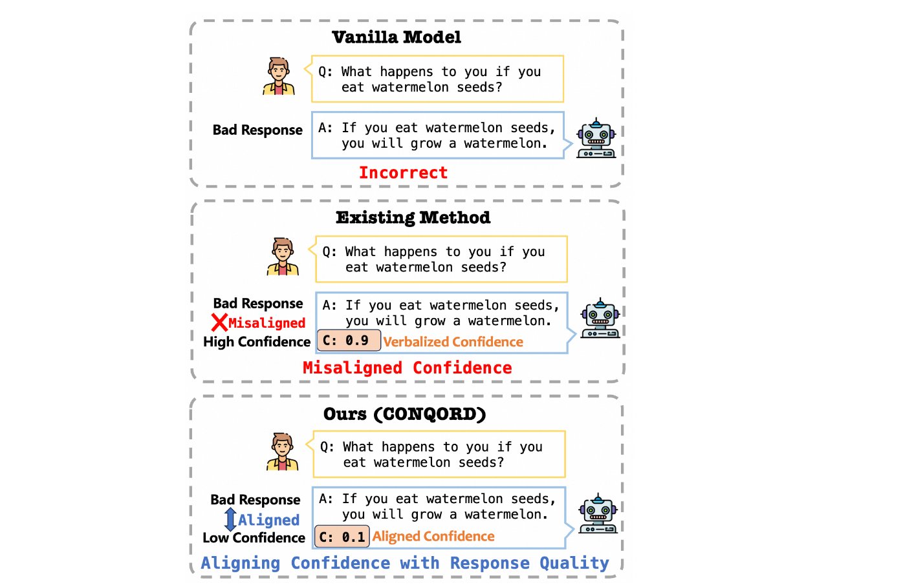

When to Trust LLMs: Aligning Confidence with Response Quality and Exploring Applications in RAG
[Link]
Motivation
- The urgent question is: When can we trust LLMs?
- Existing methods, which rely on verbalizing confidence to tell the reliability by inducing top-k responses and sampling-aggregating multiple responses, often fail, due to the lack of objective guidance of confidence.
Methodology
Assign high scores to well-aligned response-confidence pairs while assigning low scores to misaligned ones.

Confidence Alignment via RL
- The construction of training data begins with the generation of a dataset containing tuples in the format: *<question, response, confidence score>*.
- This alignment gain comes at the cost of reduced response accuracy, which can be attributed to the distinct objectives used for response quality and confidence alignment in the RL fine-tuning process.
- Therefore, aim to align confidence with response quality without degrading the quality itself.
CONfidence-Quality-ORDer-preserving Alignment (CONQORD)
Dual-component Reward Strategy
- For response quality, train a quality reward model that rates the response.
- For confidence alignment, we design an order-preserving criterion that maintains a consistent ordinal relationship between the verbalized confidence and response quality rating.
- With this dual-component reward function, comprising both the quality reward model and the alignment reward function, employ Proximal Policy Optimization (PPO) algorithm to align the verbalized confidence with the quality of the response, without causing the model to become overcautious.
- Quality reward: Utilize Reinforcement Learning from Human Feedback (RLHF) datasets, ensuring that the high-quality response receive a higher score than the low-quality ones.
- Order-preserving alignment criterion: This criterion is grounded in the intuition that a higher quality response should be accompanied by a higher stated confidence.
- Order-preserving alignment reward: The reward function is defined as the sum of the products of pairwise differences in confidence and corresponding reward scores for all samples.
RL Fine-tuning LLM
Employing the dual-component reward as an approximation of the golden reward and the vanilla pre-trained LLM as the policy π for optimization.
Comparison with PreApproach
- PreApproach manually assigns confidence scores to construct samples for fine-tuning reward model data, which is susceptible to introducing bias.
- CONQORD method introduces an order-preserving alignment reward function that circumvents this issue by not requiring explicit confidence specification.
Experiments
Datasets
- TruthfulQA, Natural Questions (NQ).
Baselines
Models
Metrics
- Expected Calibration Error (ECE)
- Pearson Correlation Coefficient (PCC) - the linear relationship between two data sets
- Spearman’s Rank Correlation Coefficient (SRCC) - the rank-based correlation between two variables.
- Accuracy - GPT-4 to evaluate.
Findings
- CONQORD maintains the base model’s performance while significantly improving calibration, unlike PreApproach, which causes a notable performance drop.
- When compared to the CoT prompt that enhances performance, CONQORD still has room for improvement.
- Introducing retrieval augmentation for high-confidence responses may lead to unexpected performance degradation.
- Choosing an appropriate confidence threshold in practical applications enables us to fully leverage the model’s inference capability while minimizing unnecessary retrieval and avoiding noisy information.